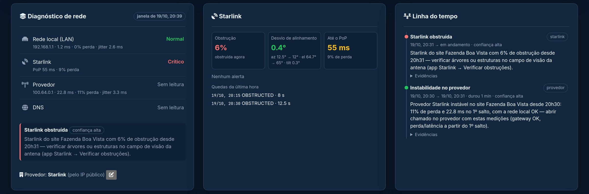
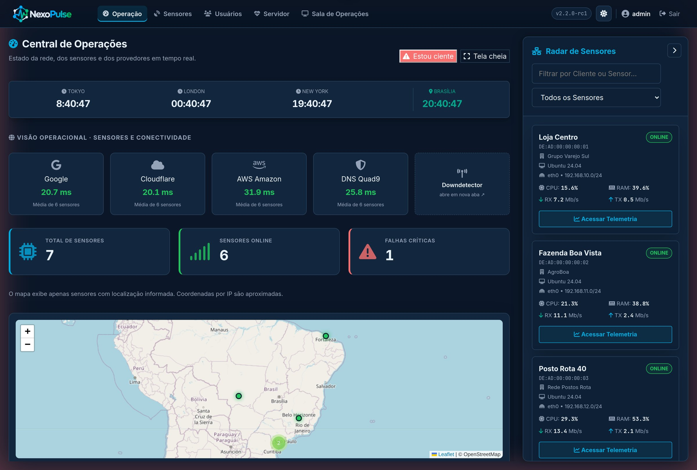

Centro de Operações de Rede · 24/7
Sua conexão monitorada por quem entende — antes que o problema chegue até você.
Monitoramento 24/7Diagnóstico da causaAlertas no TelegramAcesso à plataforma
 Tecnologia NexoPulse · plataforma desenvolvida pela MD
Tecnologia NexoPulse · plataforma desenvolvida pela MD
O desafio
Quando a internet cai, cada minuto custa — e ninguém sabe dizer por quê.
Vendas paradas, sistemas fora do ar, equipe sem trabalhar. E a primeira pergunta é sempre a mesma: é aqui dentro, é o provedor ou é a antena?
1
Você descobre por último
A queda aparece quando alguém reclama, não quando começou.
2
Técnico às cegas
A visita acontece sem saber se o problema é no local ou fora dele.
3
Provedor sem prova
“Do nosso lado está tudo ok” — e sem medições fica difícil cobrar.
4
Problemas que voltam
Instabilidades curtas se repetem e ninguém consegue registrar.
MD Soluções Tecnológicas · Centro de Operações de Rede · Tecnologia NexoPulse02 / 13
Nossa solução
A MD monitora, diagnostica e age pela sua rede, 24 horas por dia.
1
Monitoramos
Instalamos um sensor na sua rede, que mede a conexão o tempo todo. Nosso Centro de Operações acompanha todos os seus sites, 24/7.
2
Diagnosticamos
Não paramos no “caiu”: identificamos em que ponto está o problema — rede interna, antena, provedor ou DNS — com as medições como prova.
3
Agimos
Você é avisado na hora, com a causa e o que está sendo feito. Acionamos o provedor com dados em mãos e, se contratado, levamos o suporte até você.
Sua redelink, equipamentos e antena
→
Sensor MDmede a cada poucos segundos
→
Centro de Operações MD24/7, identifica a causa
→
Você informadoTelegram e NexoPulse
MD Soluções Tecnológicas · Centro de Operações de Rede · Tecnologia NexoPulse03 / 13
Nossa tecnologia
Plataforma de monitoramento desenvolvida e mantida pela MD,
o motor por trás do nosso Centro de Operações.
NexoPulse Edge
O sensor instalado na sua rede. Mede a conexão a cada poucos segundos, lê a antena Starlink e guarda tudo se a internet cair.
NexoPulse Central
O painel na nuvem onde nossa equipe acompanha todos os sites 24/7 — e onde você acompanha os seus, com acesso próprio.
Diagnóstico inteligente
Analisa cada camada da conexão e conclui a causa provável, com evidências e o próximo passo, antes de qualquer alerta.
5 sentre cada leitura do sensor
5 camadasanalisadas em cada diagnóstico
até 7 diasde medições guardadas sem internet
24/7acompanhamento pelo nosso Centro
Por ser tecnologia própria, a NexoPulse evolui junto com as necessidades dos nossos clientes — sem depender de ferramentas de terceiros.
MD Soluções Tecnológicas · Centro de Operações de Rede · Tecnologia NexoPulse04 / 13
Nosso diferencial
Não dizemos só que caiu. Dizemos onde está o problema.
A NexoPulse analisa a conexão em camadas, de dentro para fora. O ponto mais próximo com falha explica os seguintes — assim você recebe a causa real, sem alarmes falsos.
Rede internacabos, Wi-Fi e roteadorNormal
→
Antena Starlinkobstrução e alinhamentoCausa encontrada
→
Provedorprimeiro ponto fora do localExplicado
→
Internetacesso aos serviçosExplicado
→
DNStradução dos endereçosExplicado
Causa provável
Em linguagem clara, sem jargão.
Evidências
As medições que comprovam o problema.
Próximo passo
O que fazer — e quem precisa agir.
MD Soluções Tecnológicas · Centro de Operações de Rede · Tecnologia NexoPulse05 / 13
Na prática
O que nossa equipe vê quando a antena da fazenda fica obstruída.

Plataforma NexoPulse, com dados de demonstração: estado de cada camada, leitura da antena e a linha do tempo com a causa e a ação recomendada.
MD Soluções Tecnológicas · Centro de Operações de Rede · Tecnologia NexoPulse06 / 13
Nosso Centro de Operações
Sua rede na nossa tela, 24 horas por dia.
- Tempo real: cada local reporta a cada poucos segundos.
- Mapa com todos os seus sites.
- Qualidade da conexão até Google, Cloudflare, AWS e Quad9.
- Quedas e instabilidades registradas com data e hora.

Plataforma NexoPulse, com dados de demonstração.
MD Soluções Tecnológicas · Centro de Operações de Rede · Tecnologia NexoPulse07 / 13
Plataforma NexoPulse, com dados de demonstração.
Atenção contínua
Uma queda não passa despercebida.
- Cada local do cliente com seu painel de saúde.
- Site com problema destacado em vermelho na parede do nosso NOC.
- Eventos e diagnósticos acompanhados ao vivo pela equipe.
MD Soluções Tecnológicas · Centro de Operações de Rede · Tecnologia NexoPulse08 / 13
Você sempre informado
Transparência total, do alerta ao relatório.
- Alertas no Telegram, no grupo da sua empresa: o que aconteceu, desde quando e o que fazer.
- Acesso à NexoPulse: login próprio para acompanhar seus sites em tempo real.
- Relatórios sob medida, na frequência e no formato que fizerem sentido para você.
- Sem enxurrada: só avisamos o que foi confirmado — e avisamos quando normaliza.
MD
Alertas · Sua EmpresaCentro de Operações MD · NexoPulse
🚨 STARLINK OBSTRUÍDAStarlink do site Fazenda Boa Vista com 6% de obstrução desde 20h31 — verificar árvores ou estruturas no campo de visão da antena (app Starlink → Verificar obstruções).
🎯
Confiança: alta
20:33
✅ CONEXÃO RESTAURADA🖥️
Sensor: Filial Litoral
🌐
Status: ONLINE
⏱️
Fora do ar: ~4 min
20:39
MD Soluções Tecnológicas · Centro de Operações de Rede · Tecnologia NexoPulse09 / 13
O que monitoramos
Da porta da sua empresa até a antena no telhado.
Sua conexão
- Tempo de resposta, oscilação e perda de dados, do equipamento local até a internet.
- DNS verificado à parte, separando falha de configuração de bloqueio.
- Caminho da conexão, apontando o trecho que piorou.
- Velocidade, equipamentos na rede e serviços importantes do seu negócio.
Internet via satélite (Starlink)
- Obstrução e quedas da última hora, com a causa de cada uma.
- Alinhamento da antena, com o desvio em graus.
- Qualidade até a estação da Starlink.
- Alertas da própria antena (temperatura, mastro, atualização).
MD Soluções Tecnológicas · Centro de Operações de Rede · Tecnologia NexoPulse10 / 13
Sem trabalho para você
Nós cuidamos de tudo. Você cuida do seu negócio.
1
Implantação pela MD
Nossa equipe instala e configura o sensor. Você não precisa de conhecimento técnico.
2
Manutenção contínua
Atualizamos e mantemos o monitoramento funcionando, sem interromper sua operação.
3
Nada se perde
Se a internet cair, as medições ficam guardadas e chegam depois, com o horário certo.
4
Suporte presencial
Opcional: quando for preciso ir ao local, nossa equipe vai, com prazo definido em contrato.
5
Seus dados protegidos
Cada sensor tem uma chave própria, e você acessa apenas as informações da sua empresa.
6
Sob medida
Alertas, relatórios e atendimento ajustados à realidade e à necessidade do seu negócio.
MD Soluções Tecnológicas · Centro de Operações de Rede · Tecnologia NexoPulse11 / 13
Para quem é
Para empresas que não podem ficar sem internet.
Comércio e varejo
Caixas, maquininhas e sistemas de venda sempre conectados — em uma loja ou em toda a rede.
Agronegócio
Fazendas e unidades remotas com Starlink acompanhadas de perto, mesmo longe de tudo.
Saúde
Clínicas e consultórios com agenda, prontuário e sistemas online sem surpresas.
Empresas com filiais
Todas as unidades em um só acompanhamento, com a visão de onde está cada problema.
Tecnologia própria. Nosso Centro de Operações funciona sobre a NexoPulse, plataforma desenvolvida e mantida pela MD — e que evolui conforme as necessidades dos nossos clientes.
MD Soluções Tecnológicas · Centro de Operações de Rede · Tecnologia NexoPulse12 / 13
Como começar
Três passos para sua rede passar a ser monitorada.
1
Avaliamos sua rede
Entendemos seus locais, links e o que é crítico para o seu negócio.
2
Instalamos o sensor
Nossa equipe implanta e configura, sem parar sua operação.
3
Monitoramento 24/7
Seu grupo de alertas e seu acesso à NexoPulse já começam a funcionar.
Vamos cuidar da sua conexão?
Fale com a MD Soluções Tecnológicas e agende uma avaliação da sua rede.
MD Soluções Tecnológicas · Centro de Operações de Rede · Tecnologia NexoPulse13 / 13